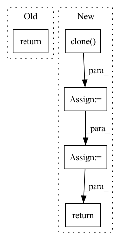

Pattern ID :571
Before Change
raise RuntimeError("Unknown value for attention norm type")
context = torch.bmm(alignment.unsqueeze(1), inputs)
context = context.squeeze(1)
return context, alignment
class Postnet(nn.Module):After Change
raise RuntimeError("Unknown value for attention norm type")
if self.forward_attn:
// forward attention
prev_alpha = F.pad(self.alpha[:, :-1].clone() , (1, 0, 0, 0)).to(inputs.device)
self.alpha = (((1-self.u) * self.alpha.clone().to(inputs.device) + self.u * prev_alpha) + 1e-7) * alignment
alpha_norm = self.alpha / self.alpha.sum(dim=1).unsqueeze(1)
// compute context
context = torch.bmm(alpha_norm.unsqueeze(1), inputs)
context = context.squeeze(1)
return context, alpha_norm, alignment
else:
context = torch.bmm(alignment.unsqueeze(1), inputs)
context = context.squeeze(1)In pattern: SUPERPATTERN
Frequency: 3
Non-data size: 5
Instances Fragment ID: 2226229
Project Name: coqui-ai/tts
Commit Name: 961af0f5cdefbb5f267671f6847cf05659962d6c
Time: 2019-04-05
Author: egolge@mozilla.com
File Name: layers/tacotron2.py
M Class Name: Attention
N Class Name: Attention
M Method Name: forward(6)
N Method Name: forward(6)
M Parent Class: nn.Module
N Parent Class: nn.Module
M File Name: layers/tacotron2.py
N File Name: layers/tacotron2.py
M Start Line: 173
M End Line: 175
N Start Line: 193
N End Line: 208
Before Change
self,
img
):
return img
// normalizations
After Change
self,
img
):
fmap = img.clone()
for enc in self.encoders:
fmap = enc(fmap)
fmap, indices, commit_loss = self.vq(fmap)
for dec in self.decoders:
fmap = dec(fmap)
recon_loss = F.mse_loss(fmap, img)
loss = recon_loss + commit_loss
return loss
// normalizations
Fragment ID: 2226273
Project Name: lucidrains/nuwa-pytorch
Commit Name: 4073052ab45b04004497892b750d79ee3ab9bd39
Time: 2021-12-28
Author: lucidrains@gmail.com
File Name: nuwa_pytorch/nuwa_pytorch.py
M Class Name: VQGanVAE
N Class Name: VQGanVAE
M Method Name: forward(2)
N Method Name: forward(2)
M Parent Class: nn.Module
N Parent Class: nn.Module
M File Name: nuwa_pytorch/nuwa_pytorch.py
N File Name: nuwa_pytorch/nuwa_pytorch.py
M Start Line: 31
M End Line: 31
N Start Line: 59
N End Line: 71
Before Change
super().__init__()
def forward(self, x):
return x
// relative positional bias
After Change
if x.ndim == 2:
x = rearrange(x, "b n -> b 1 n")
orig_x = x.clone()
x = self.encoder(x)
x = rearrange(x, "b c n -> b n c")
x, indices, commit_loss = self.rq(x)
x = rearrange(x, "b n c -> b c n")
recon_x = self.decoder(x)
recon_loss = F.mse_loss(orig_x, recon_x)
return recon_loss
// relative positional bias
Fragment ID: 2226304
Project Name: lucidrains/audiolm-pytorch
Commit Name: 3bdca3666a6b5b9d018c80d1111698feb112f078
Time: 2022-10-25
Author: lucidrains@gmail.com
File Name: audiolm_pytorch/audiolm_pytorch.py
M Class Name: SoundStream
N Class Name: SoundStream
M Method Name: forward(2)
N Method Name: forward(2)
M Parent Class: nn.Module
N Parent Class: nn.Module
M File Name: audiolm_pytorch/audiolm_pytorch.py
N File Name: audiolm_pytorch/audiolm_pytorch.py
M Start Line: 22
M End Line: 22
N Start Line: 124
N End Line: 138